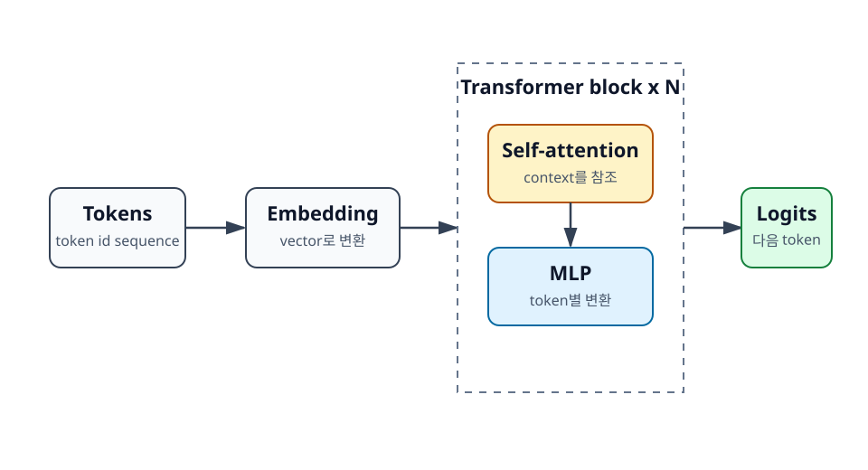
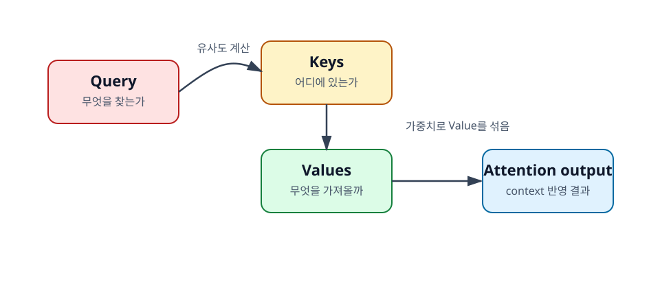

2장. Transformer 추론의 큰 그림¶
Transformer는 LLM의 핵심 구조다. 이 장에서는 학습 논문 수준의 세부 수식보다 추론을 이해하는 데 필요한 큰 흐름에 집중한다. 개발자가 먼저 알아야 할 것은 token이 vector로 바뀌고, 여러 Transformer block을 지나며, 마지막에 다음 token 후보들의 점수인 logits가 나온다는 흐름이다.

학습 목표¶
- Transformer block의 구성 요소를 큰 흐름으로 이해한다.
- Query, Key, Value의 직관을 설명한다.
- 추론 시 GPU 메모리에 올라가는 주요 데이터를 구분한다.
2.1 Transformer block의 기본 구조¶
Transformer block은 크게 self-attention과 MLP로 이루어진 반복 구조다. 실제 모델에는 layer normalization, residual connection, rotary positional embedding 같은 요소도 포함되지만, 입문 단계에서는 먼저 "context를 참조하는 부분"과 "각 token 표현을 변환하는 부분"을 구분하는 것이 중요하다.
2.1.1 Embedding¶
LLM은 문자열을 직접 처리하지 않는다. 먼저 tokenizer가 문자열을 token id의 배열로 바꾼다. Embedding layer는 각 token id를 고정 길이 vector로 변환한다. 이 vector는 모델 내부에서 token의 의미와 위치 정보를 담는 표현으로 사용된다.
예를 들어 KV cache라는 문자열은 tokenizer에 따라 몇 개의 token id로 나뉜다. 각 token id는 embedding table에서 하나의 vector를 찾는 데 사용된다. 이 vector sequence가 Transformer block의 입력이 된다.
2.1.2 Self-attention¶
Self-attention은 각 token이 같은 sequence 안의 다른 token을 참조하게 해 주는 장치다. 문장의 앞부분에 있는 단어가 뒤쪽 단어의 의미를 결정하거나, 긴 문서에서 앞 문단의 정보가 뒤 문단의 해석에 필요할 때 attention이 역할을 한다.
추론 관점에서 self-attention이 중요한 이유는 context length가 길어질수록 참조해야 할 token이 많아지기 때문이다. 특히 decode 단계에서는 새 token을 만들 때마다 과거 token들의 key와 value를 참조한다. 이때 과거 정보를 저장해 둔 것이 KV cache다.
2.1.3 MLP와 output head¶
MLP는 각 token의 표현을 더 풍부하게 변환하는 부분이다. Attention이 "다른 token에서 정보를 가져오는 과정"에 가깝다면, MLP는 "가져온 정보를 token별로 가공하는 과정"에 가깝다. LLM에서 연산량의 큰 부분은 attention과 MLP의 큰 행렬 곱에서 나온다.
마지막 layer를 통과한 hidden state는 output head를 거쳐 vocabulary 크기의 logits로 변환된다. Logits는 다음 token 후보 각각에 대한 점수다. Sampling이나 greedy decoding은 이 logits를 바탕으로 실제 다음 token을 고른다.
2.2 Attention의 직관¶
Attention은 Query, Key, Value라는 세 가지 vector를 사용한다. 이름이 추상적이지만, 직관은 비교적 단순하다. Query는 현재 token이 찾고 싶은 것, Key는 과거 token들이 어떤 정보를 가진 위치인지, Value는 실제로 가져올 정보다.

2.2.1 Query는 "무엇을 찾는가"이다¶
Query는 현재 token 입장에서 필요한 정보를 찾기 위한 질문에 가깝다. 예를 들어 "그 회사는 2024년에 매출이 증가했다"라는 문장에서 그 회사가 무엇을 가리키는지 이해하려면 앞 문맥에서 회사 이름을 찾아야 한다. 현재 위치의 Query는 그런 관련 정보를 찾는 신호가 된다.
2.2.2 Key는 "어디에 있는가"이다¶
Key는 각 token이 자신을 찾을 수 있도록 제공하는 색인에 가깝다. Query와 Key의 유사도를 계산하면 현재 token이 sequence 안의 어떤 token을 더 강하게 참조해야 하는지 정해진다. 유사도가 높은 token은 attention weight를 더 많이 받는다.
2.2.3 Value는 "무엇을 가져올 것인가"이다¶
Value는 실제로 섞여서 attention 결과를 만드는 정보다. Query와 Key로 "어디를 볼지"를 정하고, 그 위치의 Value를 가중합해 현재 token의 새 표현을 만든다. 그래서 decode에서 과거 token의 Key와 Value를 저장해 두면, 매번 과거 token 전체를 다시 계산하지 않고도 attention을 수행할 수 있다.
2.3 추론 시 메모리에 올라가는 것들¶
LLM 추론을 운영할 때 GPU 메모리에 올라가는 것은 모델 파일 하나뿐이 아니다. Model weights, activation과 temporary buffer, KV cache가 함께 공간을 차지한다. OOM을 이해하려면 이 셋을 구분해야 한다.
2.3.1 Model weights¶
Model weights는 학습으로 얻어진 parameter다. 모델 크기를 말할 때 7B, 13B, 70B처럼 부르는 숫자가 대체로 parameter 개수를 의미한다. FP16 또는 BF16에서는 parameter 하나가 2 byte를 사용하므로, 7B 모델의 weight만 단순 계산으로 약 14GB가 된다.
Quantization은 이 weight를 더 낮은 precision으로 저장해 메모리를 줄이는 방법이다. 예를 들어 INT4 quantization을 사용하면 weight 메모리를 크게 줄일 수 있다. 다만 모든 연산과 모든 모델 품질 문제가 자동으로 해결되는 것은 아니다.
2.3.2 Activation과 temporary buffer¶
Activation은 모델이 입력을 처리하는 동안 layer 사이에 생기는 중간 결과다. Temporary buffer는 attention, 행렬 곱, sampling 등 연산 과정에서 잠시 필요한 작업 공간이다. 학습에 비하면 추론의 activation 부담은 작지만, batch size와 sequence length가 커지면 무시할 수 없다.
Serving 엔진은 이런 중간 메모리를 줄이고 재사용하기 위해 다양한 최적화를 한다. FlashAttention 같은 기법은 attention 계산 중 메모리 접근과 중간 저장을 줄이는 대표적인 예다.
2.3.3 KV cache¶
KV cache는 추론 중 생성되는 요청별 상태다. Prompt를 prefill할 때 각 layer의 key와 value를 저장하고, decode 단계에서 새 token이 나올 때마다 이 cache를 참조한다. Model weights가 모든 요청에 공통으로 쓰이는 정적 데이터라면, KV cache는 실행 중인 요청마다 달라지는 동적 데이터다.
이 차이가 매우 중요하다. 모델이 GPU에 올라간다고 해서 동시 요청을 무한히 받을 수 있는 것은 아니다. 각 요청의 context가 길어질수록 KV cache가 커지고, batch size가 늘어날수록 여러 요청의 KV cache가 함께 쌓인다.
정리¶
Transformer 추론은 token id를 embedding으로 바꾸고, 여러 Transformer block을 통과시킨 뒤, output head에서 다음 token logits를 얻는 흐름이다. Self-attention은 context 안의 token을 참조하는 핵심 장치이며, Query, Key, Value의 관계를 이해하면 KV cache가 왜 필요한지도 자연스럽게 이해할 수 있다.
GPU 메모리 관점에서는 model weights, activation과 temporary buffer, KV cache를 구분해야 한다. 특히 serving에서는 요청마다 커지는 KV cache가 동시성, long-context, OOM 문제의 핵심 원인이 된다.
점검 질문¶
- Self-attention과 MLP는 각각 어떤 역할을 하는가?
- KV cache는 model weights와 무엇이 다른가?
다음 장으로¶
다음 장에서는 token, context, sequence length를 다룬다. LLM API 비용과 serving 성능을 이해하려면 문자열 길이가 아니라 token 수를 기준으로 생각해야 한다.